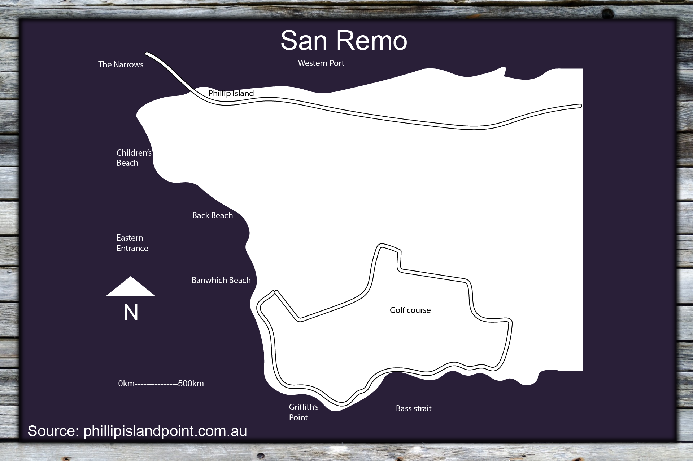
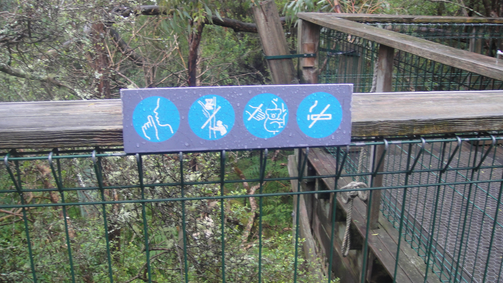
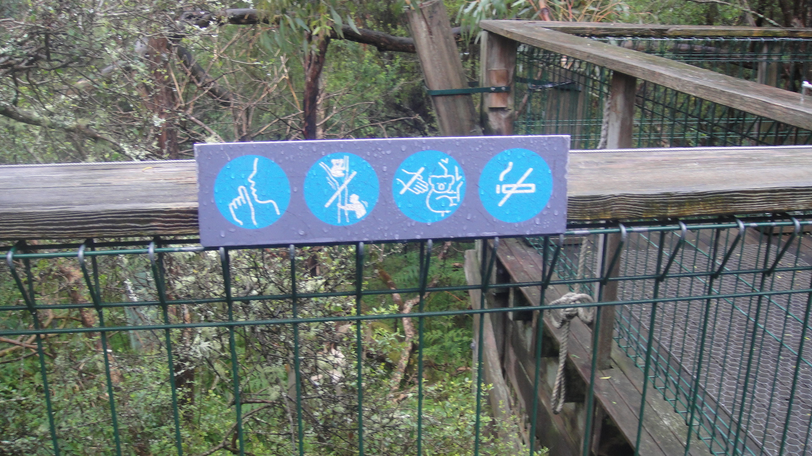

Introduction
Phillip Island, which is located in Victoria, is a popular tourist destination that has welcomed over 1,000,000 visitors yearly, 56% of which are from overseas [1]. Because of this, much of the island's economy revolves around tourism. There are many attractions and accommodations meant to entertain and educate tourists. Phillip Island has been declared an "advanced ecotourism destination", which includes an emphasis on nature, sustainability, environmental conservation, customer satisfaction and cultural understanding. The aim of this fieldwork is to investigate and compare the focus on customer satisfaction, customer safety and co-operation with local communities at the sites at Phillip Island. It will investigate to what degree San Remo, Koala Conservation centre, The Nobbies and the Penguin Reserve ensure safety and satisfaction for the tourists and local communities. Based on the rating given by NEAP it is hypothesised that the attractions at Phillip Island employ a wide variety of management techniques that result in high customer satisfaction, as well as a positive effect on the local communities.
Phillip Island is located in Victoria, Australia. It is 125 km south-southeast of Melbourne. The four study sites are San Remo, the Koala Conservation Centre, the Nobbies and the Penguin Reserve. San Remo is located on the east of the island. The Koala Conservation Centre is on the east of the main island. The Nobbies is on the west side of the island, and the Penguin Reserve is located right next to the Nobbies, to its right. Phillip Island has a mean daily maximum temperature of 24 degrees Celsius and a minimum of 14 degrees Celsius, and the mean monthly rainfall varies from 30 mm to 80 mm throughout the year. Phillip Island is 23 km long and 10 km wide [2].
The Yalloc Bulluk clan were the first inhabitants of Phillip Island, which was known as "Corriong" or "Millowl". In 1798, Europeans began settling in Phillip Island. Through 1985 to 2010, a buy-back program was employed. In 2014 and 2015, Phillip Island Nature Parks was awarded the international Green Flag Award, for its high quality management of tourists and attractions. Currently it is still being employed as a popular tourist destination [1].
Method
For each site, the following information will be collected. In bold is the data that will be highly relevant to the research question.
- A list of natural features and human features found at the site
- Three to five management techniques from each site, its intended purpose and effectiveness
- Measurement of the noise level at each site (to be compared with the suggested level)
- A scale from little significance to big significance on four aspects- evidence of human impact, litter, density of vegetation and evidence of management (litter will be relevant to study).
- A series of questions on how an aspect of the site is managed as a resource, how are the tourists managed, and what educational/ecotourism does the site serve.
- A table of criteria will be checked out- Natural area focus, interpretation, environmental sustainability, contribution to conservation, collaborating with communities, cultural component, customer satisfaction, responsible marketing.
- Evaluation on whether this site would receive an Ecotourism accreditation rating (with focus on customer satisfaction).
- An annotated sketch map of the site.
- Photos that illustrate the data collected.
Equipment
Photos are taken with the Sony Cypershot DSC-T900.
Field recordings done with the Zoom H1n.
Presentation of Data
San Remo
| Natural Features | Human Features |
|---|---|
| Beach | Water tap |
| Waves | Signs |
| Pelicans | Bridge |
| Trees | Roads |
| Boats |
| Management Technique | Purpose | Is it working? |
|---|---|---|
| Water tap | Provides water for tourists | Yes, it is convenient for the tourists. |
| Rubbish bin | For tourists to put their trash, avoid polluting the environment | Mostly, the bins are conveniently placed for use, but there is some litter around. |
| Signs | Provides information on the site to visitors | Yes, they are educational. |
| Evidence of human impact | 5/5 |
| Litter | 2/5 |
| Density of vegetation | 3/5 |
| Evidence of management | 5/5 |
How are the pelicans managed as a resource?
They are fed at a regular time for tourists to see- the pelicans have become used to coming at the same time, expecting food to be given out.
How are the people visiting the pelicans managed? Is this effective?
The tourists are encouraged to buy fish and chips by the speaker who is feeding the pelicans. The tourists are educated about the pelicans, and ensured that the food given to the pelicans is good for them.
What educational/ecotourism purpose does this activity serve?
The activity teaches the tourists about the life and habitat of pelicans, where and when they go to mate, how to tell apart the male and female pelicans, as well as their diets.
NEAP Criteria
| Natural area focus | Yes |
| Interpretation | No |
| Environmental sustainability | No |
| Contribution to conservation | No |
| Collaborating with communities | Yes |
| Cultural component | No |
| Customer satisfaction | No |
| Responsible marketing | No |
Recordings
N/A
Map of San Remo
The Koala Conservation Centre
| Natural Features | Human Features |
|---|---|
| Bush | Bridge |
| Trees | Doors |
| Lake | Plastic on trees |
| Flowers | Signs |
| Fire hydrants |
| Management Technique | Purpose | Is it working? |
|---|---|---|
| Bins | Provides a place for tourists to leave their trash, results in less trash in environment | Yes, there is no trash around. |
| "Plant a seed" activity | To encourage the growth of native plants | Yes, the activity is popular with children. |
| Signs with information | Educates the tourists on the koalas to intrigue them. | Yes, they are educational and many people are seen reading them. |
| Rope | To mark the area that tourists are not meant to go in to | Yes, there are no people inside the area. |
| Bridge | To provide a clear path for tourists to view the koalas | Yes, it is the main path that tourists are seen walking on. |
| Evidence of human impact | 4/5 |
| Litter | 1/5 |
| Density of vegetation | 4/5 |
| Evidence of management | 5/5 |
 

How is the centre managed as a resource?
There is a lot of information provided to keep the tourists engaged, which teaches them about sustainability, the animals and indigenous history. The centre also provides shelter and a gift shop.
How are the people visiting the koalas managed? Is this effective?
The people are managed with the use of the bridge which keeps them on a set path to see the koalas. There are signs with information to keep them interested.
What educational/ecotourism/cultural/social purpose does this activity serve?
The activity educates people on koalas, their habitats, diet and sleep through the signs in the building as well as on the bridge. There is also information on the history of the area.
NEAP Criteria
| Natural area focus | Yes |
| Interpretation | Yes |
| Environmental sustainability | No |
| Contribution to conservation | Yes |
| Collaborating with communities | No |
| Cultural component | Yes |
| Customer satisfaction | Yes |
| Responsible marketing | Yes |
Recordings
Map of the Koala Conservation Centre
The Nobbies
| Natural Features | Human Features |
|---|---|
| Ocean | The Antarctic Experience |
| Rocks | |
| Birds |
| Management Technique | Purpose | Is it working? |
|---|---|---|
| Visitor centre path | Area for all the displays | Yes it is very populated. |
| Hand sanitiser station | For tourists to use, avoid spread of disesase. | Not many people are seen using it. |
| Bathrooms | For visitors use | Yes |
| Informative signs | To educate and interest the tourists | Yes, they are very informative and entertaining. |
| Interactive signs & displays | To educate tourists with a focus on entertainment | Yes, it is appealing to younger children as well as adults. |
| The room with the big display and soundtrack | To immerse the tourists in a landscape while teaching them. | Yes, there are quite a few tourists inside and the display is captivating. |
| Water refill station | To provide water to the tourists | Yes |
| Evidence of human impact | 5/5 |
| Litter | 1/5 |
| Density of vegetation | 2/5 |
| Evidence of management | 5/5 |


How is the bluff managed as a resource?
The boardwalk allows tourists to view the scenery while staying on track. There are informative signs around for educational purposes.
How are the people managed? Is this effective?
There is a clear path to walk on both in the boardwalk and the Antarctic Experience, which keeps people organised and prevents them from intruding or getting lost.
What educational/ecotourism purpose does this activity serve?
The activity provides lots of education on Antarctica, its animals and the experience living there. It also has information on climate change and pollution. There are a lot of interactive activities which appeals to younger people.
NEAP Criteria
| Natural area focus | No |
| Interpretation | Yes |
| Environmental sustainability | No |
| Contribution to conservation | No |
| Collaborating with communities | No |
| Cultural component | Yes |
| Customer satisfaction | Yes |
| Responsible marketing | Yes |
Recordings
Map of the Nobbies
The Penguin Reserve
| Natural Features | Human Features |
|---|---|
| Ocean | Boardwalk |
| Beach | Seats |
| Seagulls | Centre |
| Penguins |
| Management Technique | Purpose | Is it working? |
|---|---|---|
| Visitor centre | For the tourists to pass through before seeing the penguins. | Yes |
| Seats | For tourists to sit on while watching the penguin parade. | Yes |
| Bathrooms | For visitors use | Yes |
| Evidence of human impact | 4/5 |
| Litter | 2/5 |
| Density of vegetation | 4/5 |
| Evidence of management | 5/5 |
Images N/A
How is Summerland Bay and the Penguin Reserve managed as a resource?
The site is used as an attraction for tourists to see the penguins.
How are the people visiting the penguins managed? Is this effective?
The people visiting are managed by tour guides who inform them about the penguins, as well as instructing them to not take pictures after a certain time. This rule was mostly followed by the tourists. There is a gift shop in the Centre with souveneirs which appeals to a wide range of audiences.
What educational/ecotourism purpose does this activity serve?
The activity is appealing to people who are interested in observing penguins. A few facts about the penguins and their habits are explained as the tourists wait for the penguins to come out.
NEAP Criteria
| Natural area focus | Yes |
| Interpretation | Yes |
| Environmental sustainability | No |
| Contribution to conservation | No |
| Collaborating with communities | No |
| Cultural component | No |
| Customer satisfaction | Yes |
| Responsible marketing | Yes |
Recordings
N/A
Map of the Penguin Reserve
Discussion: Analysis of Data
Questions:
- How were the tourists managed?
- How were the tourists educated?
- How were the tourists entertained?
- How are the local communities affected?
San Remo
The pelican feeding would not receive an Ecotourism accreditation rating, because of the unsustainable nature of the pelican feeding. However, they do collaborate with local communities by giving an advertisement to the local fish and chips shops.
Furthermore, environmental education, contribution to conservation and sustainable practices are not achieved at this site, as the tourists are not educated on the effect that the feeding has on pelicans. Although they are entertained, their interest in being told the full story is ignored. It is also not sustainable for the pelicans themselves to be fed in this way and the site disrupts their natural habits.
In San Remo, the tourists were managed through the use of a tour guide who explained the main attraction (pelican feeding) to them. They were educated by the tour guide who explained facts about the pelicans. The tourists were entertained by watching the pelicans who came up to the beach at a specific time to be fed by the tour guide. The tourist guide gave an advertisement for the local fish and chips shops during their speech.
The Koala Conservation Centre
The centre would receive an Ecotourism accreditation rating, as it does a lot to educate and accomodate tourists while maintaining a connection to history, as well as helping the conservation of koalas who would go extinct naturally.
The site uses bridges and roads to lead tourists to the right places. There are signs for many types of audiences, with information about koalas and wild life. There are many places to explore and many koalas. In the centre theres a lot more information on sustainability as well as Indigenous history.
Environmental education is a major objective of the centre. Many measures have been set up to achieve this- there is a guide who will talk to the tourists before they go in to see the koalas. The many signs inthe centre provide information as well as diagrams and models which are interactive and engaging.
Therefore, the current management strategies are effective. The Koala Conservation Centre is effective at managing the koalas and tourists. They provide a path and spots to view the koalas, as well as information in many forms.
At the Koala Conservation Centre, the tourists were managed through the use of a visitor centre, a road and bridge and informative signs. The signs had information about the koalas. The tourists were entertained with the koalas (a few other animals were spotted). In the Centre there were references to Indigenous history.
The Nobbies
The boardwalk might recieve an Ecotourism accreditation reating based on its focus on nature. The Antarctic Experience is about nature, however it is not contributing to the preservation of nature. It also educates the tourists on environmental sustainability.
Tourism on this site is managed with the use of many faculties. Tourists are encouraged to engage with the information through captivating displays. A clear path is provided. The management strategies are effective, as they keep the tourists engage and entertained.
At the Nobbies the tourists were managed through the boardwalk and Antarctic Experience Centre. There was a plethora of signs and displays to educate and entertain the tourists. There was no mention of local communities or Indigenous history.
The Penguin Reserve
The Penguin Reserve might receive an Ecotourism accreditation rating based on its focus on natural elements (the beach and penguin), however there is little contribution to sustainability or culture.
People are managed on this site by tour guides, the centre and seats. The instructions are followed by most people. A speaker was used in the seating area to deliver the important information to ensure it was heard by everybody. The instructions were repeated in Chinese as well for foreign tourists.
At the Penguin Reserve, the tourists were managed by the tour guide, Centre, seats and boardwalk. They were informed by the tour guide, and entertained by the penguins. There was an acknowledgement of country before the show.
Conclusion
"The aim of this fieldwork is to investigate and compare the focus on customer satisfaction, customer safety and co-operation with local communities at the sites at Phillip Island. It will investigate to what degree San Remo, Koala Conservation Centre, The Nobbies and the Penguin Reserve ensure safety and satisfaction for the tourists and local communities. Based on the rating given by NEAP it is hypothesised that the attractions at Phillip Island employ a wide variety of management techniques that result in high customer satisfaction, as well as a positive effect on the local communities."
It was found that for most sites on Phillip Island studied, customer satisfaction was high. Management techniques were used succesfully to create an intriguing and accessible experience for tourists- a wide variety of language techniques were used to appeal to both adults and children. In the Antarctic Experience the focus on children was explored to great detail as many of the activities are highly captivating, simple to understand and interactive. It also provided more lengthy information for adults. Among the information was content on sustainable practices which intend to influence the tourists to make more sustainable choices, thus contributing to sustainability. At San Remo, the pelican feeding was not a sustainable practice and this fact was not communicated to the audience, so customer satisfaction was not fulfilled. The activity was helpful to local communities, however, as the casual mention of a fish and chips shop was dropped during the tour guide's speech. This collaboration between the activity and the shop was helpful to the shop as it pointed more tourists in the direction of the shop. The Koala Centre was very popular with tourists, and it appealed to both adults and children interested in seeing koalas and learning about them. The path was clearly marked with a bridge as well as low ropes to keep out tourists and spots where koalas could be seen were clearly marked. Inside the centre, plenty of information was offered about koalas, sustainability (and what the centre was doing to contribute to it) as well as Indigenous history, which is beneficial to local communities. At the Penguin Reserve, the Centre provided a comfortable space for tourists that shielded them from rain, as well as a gift shop that tourists are encouraged to spend money at. However, at the penguin parade itself, the customer satisfaction is highly dependant on factors outside of the centre's control, such as how many penguins come out at night. These means that customers may or may not be satisfied with the experience that they receive. Weather conditions can also affect customer satisfaction as there is no cover to protect against rain and wind if those weather conditions conspire.
Evaluation
This field work study was mostly succesful, however, many things could be changed to improve the results. Firstly, much of the information collected was irrelevant to the question, such as the large focus on NEAP criteria. The field recordings were also not utilised as evidence of customer satisfaction, as there were too many confounding variables. Due to the nature of the Penguin Parade no photos were taken, however, photos of the centre itself could have been collected. The collection of human and natural features was also irrelevant to the study. As customer satisfaction is a difficult variable to measure it may have been better to chose a more solid subject to investigate. In future studies, the information to collect would be management techniques and their purposes, as well as measures used by the sites to ensure customer satisfaction and a contribution to local communities.
References
- [1]: Baulch, N. (2023). Phillip Island ecotourism and environmental management field study background notes, TG.
- [2]: Britannica, T. Editors of Encyclopaedia (2023, October 8). Phillip Island. Encyclopedia Britannica. https://www.britannica.com/place/Phillip-Island
Resources
- The following were used for the maps:
- Wood texture from publicdomainpictures.net, Petr Kovář
- Wood background from publicdomainpictures.net, Petr Kratochvil
- Wood background from publicdomainpictures.net, Petr Kratochvil
- Old wooden background from publicdomainpictures.net, George Hodan
- The html for this website was validated by Nu Html Checker
- The css for this website was validated by W3C CSS Validation Service